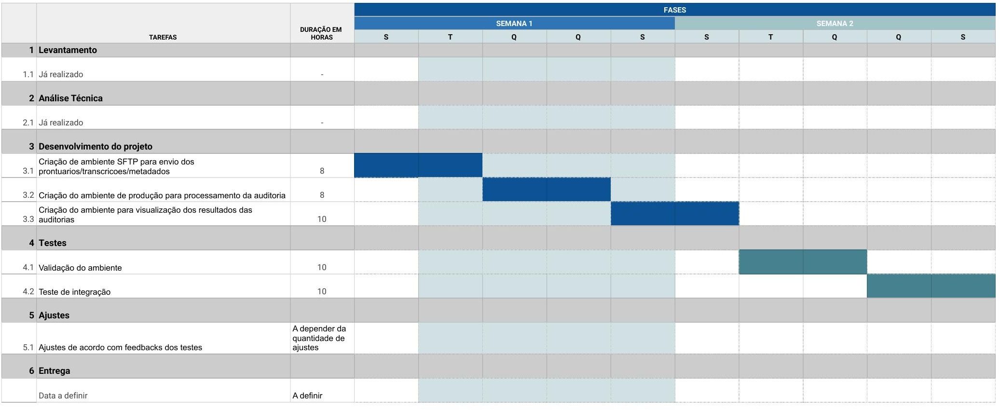
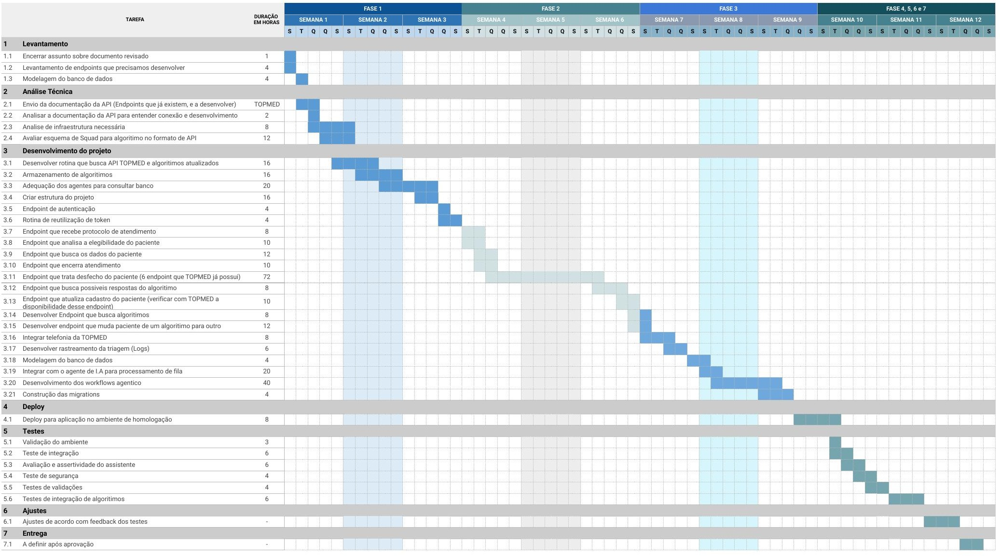
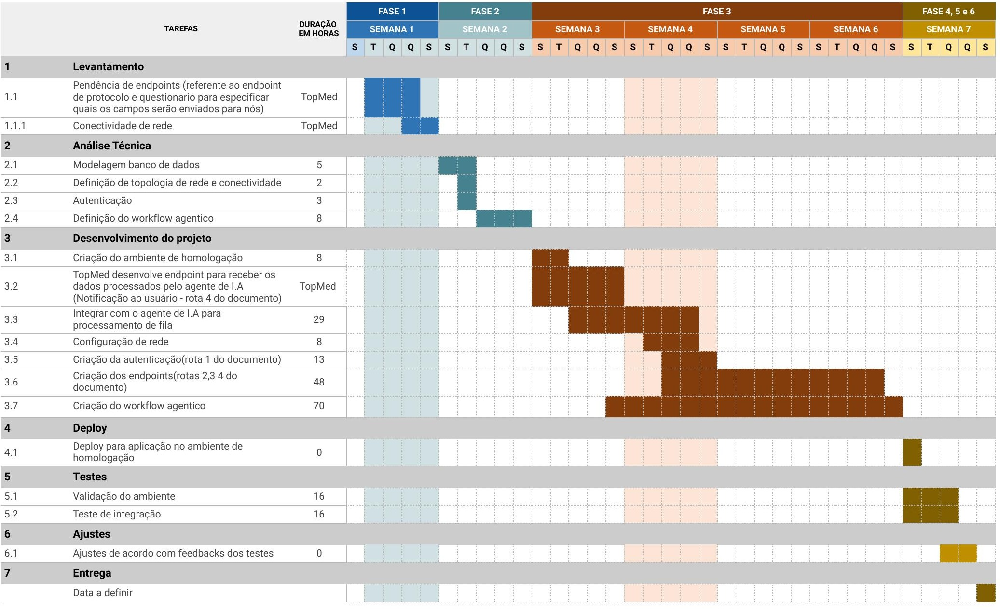

Alinhamento de iniciativas, prioridades e arquitetura de implementação — proposta consolidada de governança & roadmap entre as equipes.
Quatro tensões inerentes à integração entre Doutor-AI e TopMed.
Diversas áreas e personas têm visões distintas sobre o papel da IA — sem alinhamento estruturado, cada equipe opera com premissas diferentes.
Iniciativas experimentais e soluções de produção exigem tratamentos diferentes: escopo, riscos, timelines e arquiteturas. POCs validam funcionalidades; as definições para produção devem ser aprofundadas e validadas por TI/TOPMED × PRODUTOS/Doutor-AI com alinhamento aos usuários de negócio.
Nenhuma solução de IA deve criar fluxos paralelos. Tudo precisa ser orquestrado dentro da plataforma oficial TopMed — sem shadow systems.
Negócio, TI/TopMed e Produto/Doutor-AI precisam convergir em prioridades, arquitetura e entregáveis — especialmente nos projetos de produção.
Governança clara entre Negócio, TI/TopMed e Produto/Doutor-AI é o alicerce de toda entrega bem-sucedida.
Toda demanda passa por este processo antes de entrar em execução.
Todas as iniciativas de produção são integradas exclusivamente na Plataforma TopMed — sem fluxos paralelos.
Três demandas ativas — duas experimentais e um projeto de produção.
Agentes de IA transcrevem e preenchem automaticamente fichas de auditoria baseadas no protocolo clínico PACK, validando assertividade antes da integração sistêmica.
Agente de IA atende ligações, valida elegibilidade via API TopMed e conduz triagem clínica por voz com 4 algoritmos. Dashboard de resultados em tempo real.
Kick-off formal com Área de Produtos TopMed. Definição de fluxos, interfaces, metadados e prototipação para integração nativa na plataforma oficial.
Todas as iniciativas de produção são integradas exclusivamente na Plataforma TopMed — sem fluxos paralelos.
Agentes de IA automatizam 100% das auditorias de atendimentos · Protocolo PACK · Validação clínica humana.
Agentes de IA automatizam 100% das auditorias de atendimentos · Protocolo PACK.
Solução. Agentes de IA recebem gravações de atendimentos clínicos, transcrevem com STT, interpretam o conteúdo e preenchem automaticamente a ficha de auditoria segundo os critérios e guidelines do Protocolo PACK — entregando os resultados tabulados para revisão e validação clínica humana.
Após validação clínica, o próximo passo é alinhar com TI/TopMed como incorporar o fluxo de automação na plataforma oficial.
POC Auditoria Clínica PACK · Março 2026.
Gravações de atendimentos clínicos entregues à equipe Doutor-AI para início do processamento.
Recebimento da planilha com exemplos de auditorias manuais — base de guideline para os agentes. Novas fichas técnicas e REMUNE adicionadas nas regras (13/03).
Execução dos agentes de IA sobre os atendimentos: transcrição, análise, preenchimento das fichas PACK e tabulação completa.
Resultados entregues para usuários de negócio TopMed avaliarem assertividade clínica. Decisões: incluir prontuários e auditoria de Enfermagem.
Definição de como a plataforma TopMed incorporará o fluxo de automação de auditorias — interfaces de integração entre sistemas. Aguardando recebimento dos prontuários de consultas e gravações de enfermagem (25/03).
Após aprovação clínica da POC, evolução para automação contínua em produção — cobrindo todos os atendimentos da operação.
Ações imediatas para desbloqueio e avanço da iniciativa.
Decisão de ampliar a auditoria com mais gravações e PEP. Receber prontuários de consultas e enfermagem. Novas fichas de Enfermagem para novo processamento.
Resultados disponibilizados para validação clínica pelos usuários de negócio TopMed.
Estamos processando o feedback, treinando as regras e prevemos liberar para nova rodada de testes na segunda-feira.
Cris passou para o Thiago novos áudios para processamento na semana do dia 27/04. Processamento em execução, com entrega prevista até sexta-feira.
Mapeamos as atividades necessárias para criação do ambiente de produção da auditoria — cronograma elaborado e disponível na Seção VII.
Agente de IA receptivo · Canal Telefônico · 4 algoritmos clínicos · Elegibilidade via API TopMed.
Agente de IA receptivo · 4 algoritmos clínicos · Elegibilidade via API TopMed em tempo real.
Solução. O agente de IA atende ligações inbound (0800), coleta CPF por voz, valida elegibilidade via API TopMed em tempo real, conduz triagem estruturada por voz usando 4 algoritmos clínicos validados, classifica o risco e orienta o paciente ao desfecho correto. Toda jornada é registrada em planilha e um dashboard monitora os resultados da POC.
POC de 15 dias após entrega · 2 números dedicados (homologação interna + testes TopMed).
4 algoritmos clínicos validados · 4 desfechos possíveis · Materiais TopMed.
Triagem de sintomas gripais, febre e infecções respiratórias
Avaliação de quadros gastrointestinais e risco de desidratação
Classificação de dores de cabeça e identificação de sinais de alerta
Triagem de infecções urinárias e sintomas do trato urinário
Orientações e monitoramento domiciliar
Agendamento de consulta remota
Encaminhamento a unidade de saúde
Acionamento imediato de emergência (SAMU/UPA/EH)
| Documentação API de elegibilidade | RECEBIDO |
| CPFs de teste (ambiente sandbox) | RECEBIDO |
| Lista fechada de desfechos | RECEBIDO |
| KPIs desejados para o dashboard | RECEBIDO |
| Algoritmos clínicos (4 Excel) | RECEBIDO |
Ações imediatas para desbloqueio e avanço da iniciativa.
Entrega completa do dashboard com logs e KPIs, junto com números dedicados de homologação e produção para a equipe TopMed.
Implementação de melhorias no agente, tornando-o mais fluido — como o agente usado na demonstração do Maurício.
Recebimento de um relatório consolidado dos resultados de testes realizados, juntamente com os áudios dessas execuções.
Aplicação das melhorias conforme apontamentos do relatório do dia 08/05; geração de um novo relatório de testes a ser compartilhado até 14/05.
O avanço da iniciativa depende do recebimento de materiais e decisões confirmadas nas próximas reuniões.
Integração nativa na Plataforma Saúde24h · 6 tipos de atendimento · 4 canais de entrada · Kick-off com Área de Produtos.
Plataforma Saúde24h · 6 tipos de atendimento · 4 canais de entrada.
Os copilotos de IA serão integrados nativamente na Plataforma TopMed/Saúde24h — nenhum sistema paralelo será criado. A IA se encaixa nos fluxos já existentes.
URA → link SMS → chat IA
CPF → link → chat IA
Acesso direto ao Medy
APP/site parceiro → plataforma
Os copilotos de IA se inserem dentro deste fluxo existente — ampliando a capacidade da operação sem criar novos sistemas.
PRODUÇÃO · Integração nativa na Plataforma TopMed · Kick-off com Área de Produtos.
Solução. Copilotos de IA que se integram aos 6 tipos de atendimento da plataforma Saúde24h — assistindo médicos, enfermeiros e pacientes em tempo real. Cada copiloto é especializado em um momento da jornada: triagem inteligente, suporte clínico durante a consulta, automação de pós-consulta e análise de jornada. Toda integração via interfaces oficiais da plataforma TopMed.
Reunião formal com Área de Produtos TopMed. Apresentação do escopo, alinhamento de expectativas e definição de papéis. Negócio + Produto.
Repasse técnico de todos os pontos de integração necessários entre Doutor-AI e TI/TopMed nos 6 tipos de atendimento. TI/TopMed + Doutor-AI.
Definição das primeiras interfaces, contratos de API e estrutura de metadados. Base para o início da prototipação. Doutor-AI (liderança).
Protótipo do fluxo para aprovação do usuário de negócio antes da implementação — evita retrabalho e alinha expectativas. Negócio TopMed.
Datas orquestradas pelo Negócio e TI/TopMed — Doutor-AI garante as interfaces dentro do planejamento da plataforma.
PRODUÇÃO · Copilotos de IA para Telemedicina · Plataforma Saúde24h.
Aprimora a triagem IA com NLP avançado · detecta urgências · reduz abandono.
Assistência ao médico: sugere condutas · preenche prontuário · detecta alertas.
Automação de prescrições · lembretes de retorno · monitoramento de adesão.
Análise de jornada · dashboards em tempo real · alertas de SLA e performance.
Ações imediatas para desbloqueio e avanço da iniciativa.
Entrega do mapeamento de fluxos da Saúde24h. Pendente com equipe TopMed.
Alinhamento e planejamento da versão final do documento de integração.
Entrega da primeira versão do documento atualizado de integração.
Entrega do cronograma de desenvolvimento da iniciativa (disponível na Seção VII).
O avanço dos projetos depende do recebimento de materiais e decisões confirmadas nas reuniões de alinhamento.
Visão integrada das três iniciativas · Março a Maio/26+.
| Iniciativa | Mar/26 · S1-S2 | Mar/26 · S3-S4 | Abr/26 · S1-S2 | Abr/26 · S3-S4 | Mai/26 + |
|---|---|---|---|---|---|
| 🔬 Auditoria PACK | ✓ Chamadas recebidas | IA + Tabul. 12–13/03 Validação 16/03 |
Alinhamento TI | — | — |
| 🎤 Triagem por Voz | ✓ Requisitos recebidos | Build agente voz 15 dias úteis |
POC 15 dias | Resultados | Continuidade |
| 🚀 Copilotos Telemedicina | 😊 Kick-off | Mapeam. Fluxos Def. Interfaces Prototipação |
Implementação | Implementação | Continuidade |
Cronograma sujeito a ajustes conforme disponibilização de materiais pendentes pela TopMed. Objetivo principal: organizar as diferentes frentes com alinhamento entre equipes e expectativas unificadas. Os cronogramas executivos detalhados de cada frente estão na Seção VII.
Cronograma executivo detalhado de cada iniciativa — base para o orçamento de implantação na Seção IX.
2 semanas · 6 fases · 46 horas de execução Doutor-AI (via SFTP).

12 semanas · 7 fases · 376 horas de execução Doutor-AI.

7 semanas · 7 fases · 226 horas de execução Doutor-AI.

Resumo das atividades executadas pela Doutor-AI até o momento.
Esta página apresenta o consolidado de horas executadas pela equipe Doutor-AI nas três frentes de projeto desde o início da parceria. As horas estão segmentadas por frente, com totais em minutos, horas e valor a R$ 250,00/hora. O detalhamento completo — todas as atividades, datas, colaboradores e tempos individuais — está disponível no link da planilha ao final desta página.
| Frente | Projeto | Minutos | Horas | Valor/hora | Total |
|---|---|---|---|---|---|
| 1 | Triagem clínica por voz | 24.310 min | 405h 10min | R$ 250,00 | R$ 101.291,67 |
| 2 | Copiloto de IA para telemedicina | 1.605 min | 26h 45min | R$ 250,00 | R$ 6.687,50 |
| 3 | Auditoria de atendimentos clínicos | 5.400 min | 90h 00min | R$ 250,00 | R$ 22.500,00 |
| — | TOTAL CONSOLIDADO | 31.315 min | 521h 55min | R$ 250,00 | R$ 130.479,17 |
Todas as atividades realizadas pela equipe Doutor-AI estão registradas na planilha abaixo — com data, colaborador, descrição da atividade e tempo dedicado.
Estimativa de implantação por frente · base: cronogramas executivos × R$ 250,00/hora.
O cálculo é direto: horas previstas no cronograma de cada frente (Seção VII) × R$ 250,00/hora. Os valores representam a estimativa preliminar de implantação e podem ser ajustados conforme a definição final de arquitetura, responsabilidades entre os times e eventuais ajustes identificados durante os testes.
| Frente | Horas estimadas | Valor/hora | Valor estimado |
|---|---|---|---|
| Frente 1 · Auditoria Clínica (via SFTP) | 46h | R$ 250,00 | R$ 11.500,00 |
| Frente 2 · Triagem Clínica por Voz | 376h | R$ 250,00 | R$ 94.000,00 |
| Frente 3 · Copiloto de IA para Telemedicina | 226h | R$ 250,00 | R$ 56.500,00 |
| TOTAL ESTIMADO | 648h | R$ 250,00 | R$ 162.000,00 |
A frente de Auditoria poderá contar com componente variável por evento/auditoria processada, a ser definido em proposta complementar. Valores preliminares, sujeitos a ajustes conforme arquitetura final e validação técnica.